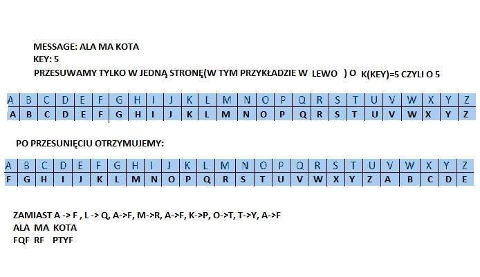
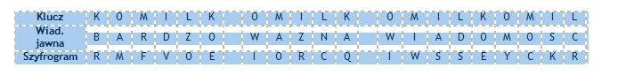
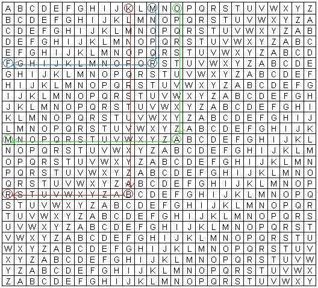
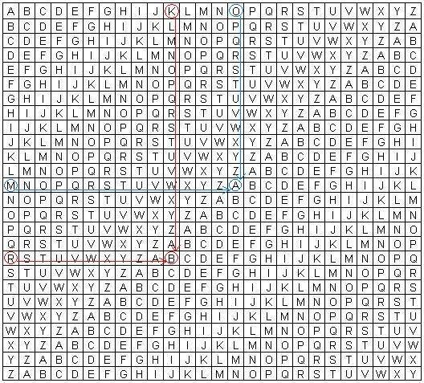
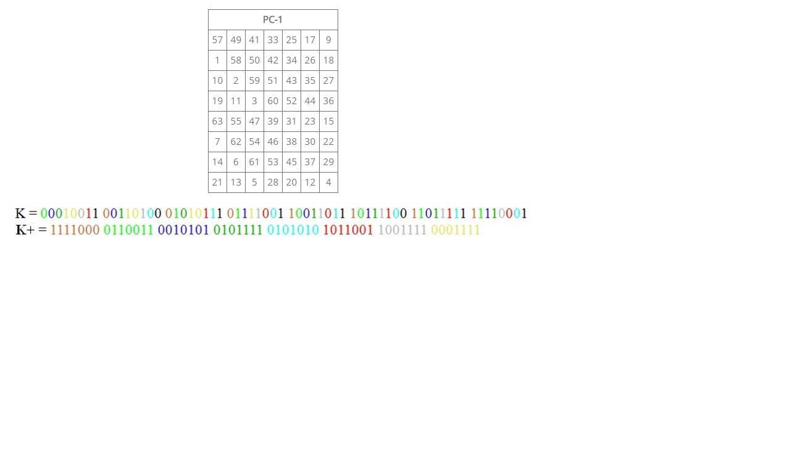
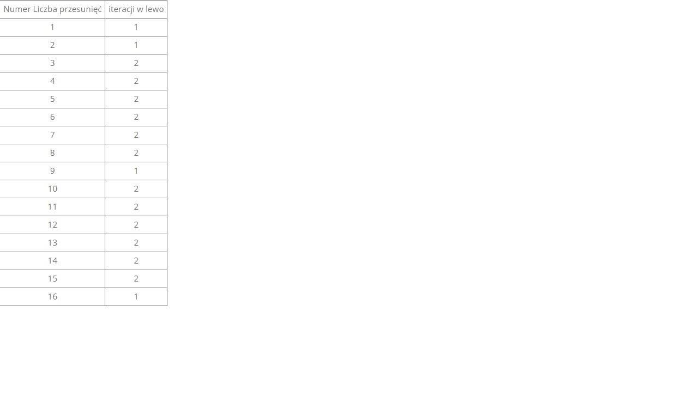
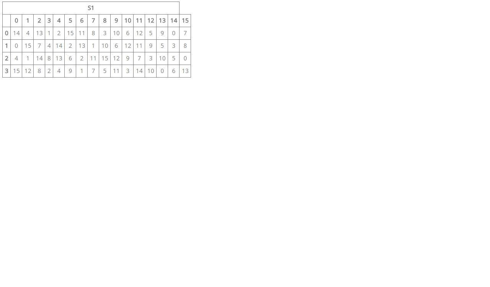
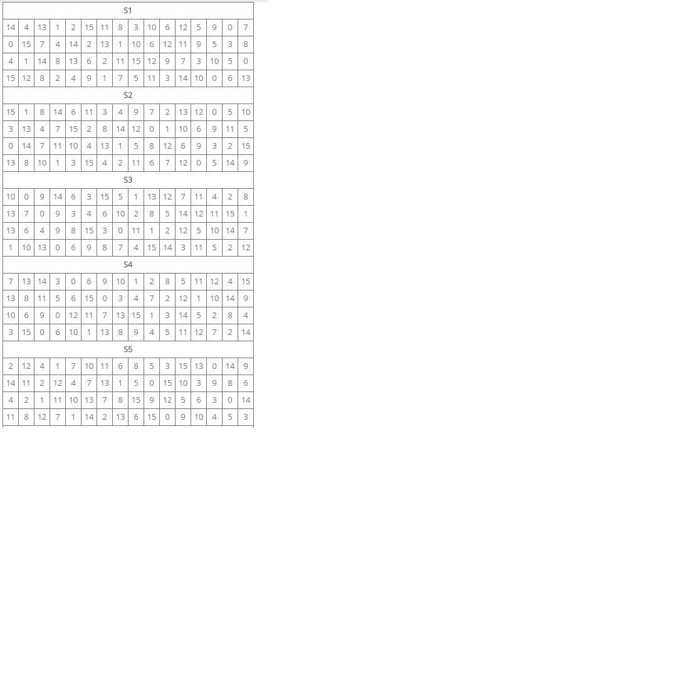

Cryptology
Branch of science de aling with cryptography and cryptanalysis is cryptology. Within this area introduces some concepts of systematization.
Generally overt message encryption algorithm is implemented as follows: E(M, KE)=C, where E is the encryption algorithm, M is encrypted message, KE is the encryption key, the resulting ciphertext C. Decryption is, however, the procedure D(C, KD)=M, where D is the encryption algorithm, and KD is a decryption key. If the decryption key is a symmetric key encryption, cryptography is so called a symmetric cryptography. In symmetric cryptography algorithm decryption is determined in a simple way (in accordance with the type of symmetry key) encryption algorithm. This is called private key cryptography, because its security depends entirely secret key encryption/decryption. For example identical symmetry when private keys are equal KE = KD, decryption algorithm is the inverse of the encryption algorithm: D=E-1. A special case of the private key cryptography is a cryptosystem where the encryption algorithm (ie, a ciphertext) does not depend at all on the key: then we deal with the security of the ciphertext based only on the secrecy of the algorithm encryption/decryption (D=E-1). This has a number of drawbacks, and is generally undesirable feature in cryptography, because once introduced system has no variable parameter and is very susceptible to cryptanalysis techniques. However, there are examples of this type of cryptography in modern history.
The whole historical cryptography (from scytale (https://en.wikipedia.org/wiki/Scytale),
Caesar cipher (https://en.wikipedia.org/wiki/Caesar_cipher),
medieval monks ciphers and codes appearing en masse in the Renaissance) can be classified as symmetric cryptography two basic categories: substitution ciphers and tansposition ciphers. The encryption algorithms substitutional some elements of the alphabet are replaced with other characters of the alphabet according to a substitutional function. The overall group substitution ciphers can be divided into simple substitution ciphers (every character is encrypted messages corresponds exactly 1 scratching character - example is the Caesar cipher), homophonic substitution ciphers (every character is encrypted messages corresponds to a certain set of characters substitutional) multialphabets substitution ciphers ( represent submitting multiple simple substitution ciphers - in which the change occurs alphabet, eg. as a function of the character position) and poligrams substitution ciphers (which are encrypted with a group of characters).
The first two groups of substitution ciphers are classified either as stream ciphers (are performed independently for each element - character - news), while the last two as block ciphers (are performed independently for certain substrings elements in the message). On the other hand, in the second broad category switching ciphers, are all algorithms whose effect lies in the fact that cryptogram shows all (and only) the elements (characters) contained in the encrypted message. The feasibility of such ciphers for n-element of the message is as much as the existing functions of the permutation (ie, n!). Examples are ciphers column, which rely on writing news columns with specific lengths and read across (the lines) - so just acted Greek scytale. Further evolution of symmetric cryptosystems boiled down to an increasingly complex combination of ciphers switching and substitutional implemented more and more in the way of hardware, and finally on the computers (the latest cryptosystem developed in the framework of this path is AES, replacing the aging DES variants). Cryptanalysis of symmetric cryptography systems to playback messages from the ciphertexts, carried out by gradually learning about the key, usually through reasoning (sometimes guessing) about the messages contained in the previously captured cryptogram these systems. The adopted conceptual nomenclature is called breaking the cipher, the successful breaking is called. method. Methods of cryptanalysis of symmetric systems generally fall into three basic categories. The first category of methods is breaking ciphers with available cryptograms - available date:
C1=E(M1, k), C2=E(M2, k), ..., Cn=E(Mn, k),
inference is performed on the messages M1, M2, ..., Mn, k key or algorithm gave Mn+1 from Cn+1=E(Mn+1, k). A special case in this category is breaking the chosen ciphertext when he has freely chosen cryptograms. The second category of methods, the breaking of a known news - available date:
M1, C1=E(M1, k), M2, C2=E(M2, k), ..., Mn, Cn=E(Mn, k),
performed inference about the key k, or algorithm gave Mn+1 from Cn+1=E(Mn+1, k).
Subcategory of these methods are methods of breaking ciphertext, but their methods are a special case of violation of adaptively chosen plaintext, at which the possibility of selecting the encrypted message is continuous. The third category of methods, the breaking of codes with the selected key (performed when a system change frequently encryption key) - available date:
k1, C1=E(M1, k1), k2, C2=E(M2, k2), ..., kn, Cn=E(Mn, kn)
carried out by inference algorithm gave the key kn+1, that is, the algorithm gave Mn+1 from Cn+1=E(Mn+1, kn+1). The most common method of cryptanalysis methods are second-class, while the methods of breaking with the selected key are the least common, but pose the greatest danger to the more advanced modern block ciphers such as AES or even TripleDES. Although there are no proven methods for breaking the rules of these advanced symmetric cryptosystems, and there is no warranty of any kind remain this state of affairs. Each symmetric cryptography algorithm may be broken (except cipher one-time pad), and the concept of its security connects directly with the complexity of computational methods of breaking. The algorithm stronger (entailing greater computational complexity methods of breaking) the greater safety. Progressing faster (exponentially according to the law Moorea) increase in computing power makes cryptanalysis techniques are becoming more efficient. It is not known at which point it turns out that the introduction of increasingly complex symmetric cryptosystems no longer profitable due to the short time of their safety, but there are indications that it may become even in a few years perspective. Nevertheless, during this peculiar evolution of complexity of symmetric cryptosystems, there was no lack in the development of cryptography, the amendments introducing a new quality. Two such revolutionary changes are mathematical proof - carried out in the early 40s by Shannon - the unconditional security of a symmetric cryptosystem one-time pad (in the way of implementation which became the problem of the distribution of random key lengths message), and the implementation of the 70 first cryptosystems asymmetric (solving the problem key distribution systems for symmetric key cryptography by implication - the protocol Diffie-Hellman, and introducing completely asymmetric cryptography - RSA). As described in the previous section, the security system of asymmetric cryptography involves computational complexity of difficult mathematical problems underlying. However, due to the finding of efficient quantum algorithms and the upcoming term (admittedly not yet fully clear) the possibility of building a quantum computer, security becomes a question mark. From the above discussion we got pessimistic picture of the future of cryptography. However, in the 80s attention was drawn again to the problem of key distribution. In this sphere, the hope of modern cryptography, quantum computing is paradoxically pushing for widespread public key systems. In recent years, moreover, it turned out that this is the hope pretty well fulfilled - the future of cryptography, as it seems in large part may lie in quantum cryptography (https://en.wikipedia.org/wiki/Quantum_cryptography ).
Confidentiality and encryption techniques
Confidentiality of data can be provided in two ways: physical limitation of access for a small group of certified entities or encrypt messages explicit so that they can be read only appointed people with special information called the key. This lecture will discuss the basic techniques of encryption in the form of historical ciphers (included in the symmetric cryptography), which provide a degree of confidentiality of data hundreds of years ago. Various advanced combinations and variations discussed further basic encryption techniques have been and are used throughout the history of cryptography (including holidays today aided algorithms implemented using computers).
2.1. substitution cipher Substitution ciphers are ciphers based on the substitution of the characters of the other overt signs, which in turn produces the ciphertext. Information about which characters have been replaced (usually giving a present in the form of function) is a symmetric cryptographic key for quick deciphering secret messages. Among substitution ciphers can be distinguished ciphers mono and polialphabets (in which the encryption is substituted characters with respectively one of the original alphabet or a number of additional alphabets, which also become part of a symmetric key).
2.1.1. Caesar cipher Caesar cipher is one of the easiest and most well-known substitution ciphers. This is an example cipher monoalphabetic (one letter in the alphabet corresponds to an open one and only one letter of the alphabet secret). It was used in ancient times by the Roman leader Julius Caesar. In the Caesar cipher to each character of the plaintext corresponds to exactly one other character cryptogram, moved in the alphabet by a certain number of characters. For example, pushed the letter C in the English alphabet with 4 characters to G.
Do not confuse this with the transposition ciphers. This is a substitution cipher (for each letter of the cipher explicitly substituted the letter ciphertext), only the key is to shift the letters in the alphabet.
(EXAMPLE:)__________________________________________________________________
So the message ALA MA KOTA can encrypt the key to shift in the alphabet, eg. 5, we obtain the ciphertext: FQF RF PTYF.
In this case, the key is the number 5 (the recipient to read the message needs to know how many letters must move in the opposite direction to receive plain text). As The recipient can read the message, knowing that offset is 5. Any letter of the ciphertext FQF RF PTYF move backward by 5 and get ALA MA KOTA.

Today (but also historical) PC technology without much problem can break the code - so it does not provide an exorbitant security guarantees, if only because of this that the alphabet is only 25 possible substitutions (which translates into low complexity keys).
2.1.2. Vigenère cipher Vigenère cipher belongs to a group of ciphers polialphabetic (generalization ciphers monoalphabetics a greater number of transformations). It comes from the sixteenth century. In order to encrypt and decrypt messages, use a special table:

to encrypt a message you must first determine the key that will know both the sender and recipient. In the case of Caesar cipher was the number that had to be added to the position of the letters in the alphabet to get a letter code. For each letter of the message this shift was identical, and thus very predictable, especially the alphabet has a small finite number of letters .For Vigeneres cipher key is the word. The longer and more varied word this code is safer. Each letter of the alphabet shift key defines the terms of which will be a part of the encrypted message explicit. For example, we show how to encrypt a message Vigenère cipher:
Chose a key example. Komil
Message partnership: BARDZO WAZNA WIADOMOSC
Now we save the key so many times that covered the length of our explicit messages. In our case it will be:
KOMILK OMILK OMILKOMIL
for explicit messages:
BARDZO WAZNA WIADOMOSC
We combine these two strings to start encrypting messages:

In the first row of the table select key letter - the first letter is K. Then look down until you come across the letter of the text to be encrypted - in our case, the letter B. We write then the first letter on the left side in the same line as previously encountered the letter, comes the letter R . for each letter we proceed similarly, and so for the letter O key messages and letters. overt A letter to the ciphertext M; for the letter M key messages and letters. R overt, character cryptogram is F and so on.
We get the ciphertext as follows RMFVOE IORCQ IWSSEYCKR.
To decrypt the message should be in the first column on the left to find the letter corresponding to the letter of the ciphertext, and the first line from the top of the letter keys. Test explicit point (decrypted) is located at the intersection of column and row. K and R gives B, O, A and M gives etc.

Until the nineteenth century, this method seemed unbreakable. However, based on observations that repeat in cryptogram can respond repetitions in the key messages and explicit it was possible to break the cipher using statistical cryptanalysis.
Introduction to Cryptography part II
Transposition cipher, matrix
This is based on the combination switch letters in the text. The simplest method of achieving this cipher is to reverse the string. Eg. Text 'Tekst jawny' can be encrypted as 'Ynwaj tsket' reversing the order. This method of course does not provide any security.
A more advanced version of this cipher is a cipher matrix based on a geometrical figure. Encryption involves entering text matrix figures the lines, and then read it columns. Consider, for example, a square with a width of 5 and text to encrypt 'Text to encrypt the square.'
1 2 3 4 5
1|Tekst| 2|dozas| 3|zyfro| 4|wania| 5|kwadr|
6 |atem
We get the ciphertext:
Tdzwkaeoyawtkzfnaesaridmtsoar.
The key in this case is a square having a side length 5. In order to make decryption of ciphertext must be entered in the same square but this time columns - but due to the fact that we do not know whether plaintext fit perfectly squared (in the example just is not so) you need to think about how to properly enter it. Just count the number of characters in ciphertext and subtracted from the square box (or the considered case it will be 29 - 25 = 4) - the resulting number will indicate how much longer will the first column 1 from the other. If, however, the resulting difference would be greater than the side of the square then each of the columns will be correspondingly longer than the side of the square (see example below).
Explicit message:
Text to encrypt square Message partnership without spaces: Tekstdozaszyfrowaniakwadratem Side of the square: 3
123
1 |Tek| 2 |std| 3 |oza|
4 szy 5 fro 6 wan 7 iak 8 wad 9 rat 10 em
Ciphertext: Tsosfwiwreetzzraaaamtdayonkdt (number of characters 29)
To decrypt above ciphertext square of side 3 include:
calculate the number of characters in ciphertext 29 subtracted from the square box: 29 - 9 = 20 the result is greater than the side of the square: 20> 3 but 20 = 3 + 3 + 3 + 3 + 3 + 3 + 2, that is, each of the three columns will take at least 3 (on the side of the square) + 6 (because in the resulting differential 3 is 6 times), characters, and the first two columns will be each had one more character (it corresponds to 2 = 20 mod 3).
Transposition ciphers not guarantee any security and are relatively easy to crack. You can use a method similar words frequently used phrases, signatures, etc .; matching the known fragments can find the key, that is, the rules shift.
One-time pad
Encryption one-time pad is an algorithm where plaintext is encrypted random key with the same length as the plaintext. This key can be used exactly once. If the key is random and strictly secret, the encryption that ensures the safety of perfect, because chances to guess the key is the same as guessing the whole message (the key is the same length as the message).
In general, the length of the key k can be any relative to the length of the original message. However, in 1940, Claude Shannon introduced information-theoretical foundations of information security, stating that the amount of uncertainty that can be introduced into the encoded messages can not exceed the amount of uncertainty contained in the key that was used to encode it. In the ciphertext (encrypted) messages can be therefore always by use of the sophisticated techniques, obtained without knowledge of the secret key, a predetermined amount of information on the original content, equal to the difference n - k. The level of security cipher is dependent on the length of the key, and it is absolutely safe only when it is equal to the length of encrypted messages.
Introduction to Cryptography part III
From a mathematical point of view, the encryption is a mathematical process in which the original message (understood as a sequence of bits) M of length n, using established mathematical algorithm E get another string C of length m:
E (M) = C
The recipient has in turn another algorithm D, mathematically linked to E in such a manner that with its help the encrypted message C back to obtain the original form of the M, and known decryption algorithm:
D (C) = M
In the early years of cryptography security encryption based on a secret algorithm for encryption and decryption. However, you can construct such algorithms, the result of which will depend on additional input K, called a cryptographic key, which are kept secret by the parties to the communication, the same algorithms can remain open. The encryption and decryption can then be written as follows:
E (M, K) = C
D (C, K) = M
Such algorithms in which the encryption key and decryption are the same, or one is explicitly compute and easily accessed from the other, call algorithms symmetric (secret key cryptography), in contrast to the discovered in 1970 the asymmetric algorithm on the public key, using encryption and two different decryption keys are mathematically related in such a way that the gain based on the second one is a difficult calculation.
Symmetric Cryptosystems
In symmetric encryption algorithms explicit messages is carried out by a cryptographic algorithm (corresponding to a certain cryptographic system), parameterized so. encryption key. Decryption is the reverse procedure while the encryption algorithm (in terms of use of the decryption key).
If the decryption key is a symmetric key encryption, cryptography is so called a symmetric cryptography. This is a class of algorithms in which the encryption keys and decryption are directly linked, they are usually identical to or directly under a trivial way from one another. This key, called the private key is telling a secret, they know only the sender and receiver.
In mechanisms with the private key encryption, also called symmetrical cryptosystems to encrypt and decrypt messages use the same secret key, and the decryption key is an open and easy computationally derived from the encryption key.
In general, the length of the key k can be any relative to the length of the original message. However, in 1940, Claude Shannon introduced information-theoretical foundations of information security, stating that the amount of uncertainty that can be introduced into the encoded messages can not exceed the amount of uncertainty contained in the key that was used to encode it. In the ciphertext (encrypted) messages can be thus always using sophisticated techniques, respectively, obtained without knowledge of the secret key with a predetermined amount of information on the original content, equal to the difference n [?] [?] [?] K. The safety level of the cipher thus depends on the length of the key, and it is absolutely safe only when it is equal to the length of encrypted messages.
In addition, if the same key is used to encrypt repeatedly different messages, is using the appropriate mathematical techniques can be likely to get the content of the original message and the figure of the same key. Unconditional security can be ensured, therefore, only by the code, where the key length is equal to the length of the message, and the key will be used only once. Cipher is called the Vernam cipher, named after its discoverer, or alternatively one-time-pad cipher and it is currently the only absolutely safe way known classical cryptography encryption.
Security, however, is only seemingly unconditional, because the use of symmetric cryptosystems is inherent to the problem of secure key agreement between the parties to secure communication - Alice and Bob. They must somehow directly convey a secret bits, physically meeting together, or using a courier, but in any case (due mentioned in the introduction of the fundamental vulnerability of traditional media to eavesdropping), this method does not guarantee absolute security. The use of an absolutely secure encryption Vernam require to provide the recipient canal classic key with a length equal to the length of the message itself, which in addition can be used only once, and his interception is no more difficult than if the same channel was sent a message in the form of overt - such proceedings seems to so completely does not make sense. The advantage of this approach is only that can be sent at once a large number of keys (using highly secure physical channel) which then will be gradually used to encrypt individual messages.
Although the use of the above-described scheme using encryption Vernam is the strongest known now classic scheme secure transfer of information to the impracticality of using the now widely from providing less security codes based on the short key and repeated its use, which, however, fracture, about how many theoretically possible, it is due to the extremely time-consuming technical possibilities. To currently used regimens include, among others Twofish, AES (aka Rijndael), Blowfish, RC4, 3DES or IDEA.
Symmetric Cryptosystem
Common to both participants secret. The identity of the problem of confidentiality of messages with the problem of secrecy of the key (the message is secure until the third person does not know the secret key). The problem of key distribution (to agree on a key without a third party being away hundreds of kilometers). Scalability (for 2 persons is required for key 1 for 3 persons - 3 keys for 4 - 6 keys, ..., 100 people - 4950 keys). Authenticity (secrecy of the key does not provide authenticity - can not be formally demonstrate which of the two potential sites is the real sender). Susceptibility to cryptanalysis techniques, or gradual learning the key. Each symmetric cryptography algorithm may be broken (except cipher one-time-pad):
* Inference (often guessing) based on the messages contained in the previously captured ciphertext.
* Inference based on the ciphertext and well-known part of the message explicit.
* Breaking ciphers with the selected key when the system is followed by frequent changes of key.
The algorithm stronger (entailing greater computational complexity methods of breaking) the greater safety. Progressing faster (exponentially according to Moore's law), the increase in computing power makes cryptanalysis techniques are becoming more efficient. It is not known at which point it turns out that the introduction of increasingly complex symmetric cryptosystems no longer profitable due to the short time of their security, and there are indications that it may become even in a few years' perspective. They are distinguished symmetric ciphers and block streaming. The encrypted stream ciphers is the entire message once and checked, in block message is divided into blocks typically 64-bit or 128-bit ..
In symmetric cipher stream is generated potentially infinite stream encryption, creating a ciphertext c (Cipher) by performing an XOR operation message m (Message) and stream encryption s (Stream).
c = s XOR m
In order to decrypt the message we identical reverse operation.
We know that x XOR x = 0 and x XOR 0 = x (XOR operation was discussed in the previous lecture), thus:
m = m XOR 0 = m XOR s XOR s = c XOR s.
Asymmetric Cryptosystems
Simultaneously with the development of the private key cryptosystems, at the end of the seventies, the first modern techniques of public-key cryptography (also called asymmetric cryptosystems). Under the influence of work on techniques led by Ralph Merkel, 1976 Whitfield Diffie and Martin Hellman presented the key distribution algorithm (called the Diffie-Hellman protocol) based on a mathematical problem difficult (discrete logarithm). A year later, Ron Rivest, Adi Shamir and Len Adelman based on the ideas developed asymmetric cryptosystem (which their initials was named RSA) based on the problem of factorization into prime factors of numbers.
With the decryption key, which in the case of applications to ensure the secrecy of communication is the secret (ie. The private key), you can easily (in terms of computational complexity) to obtain the encryption key (that being completely open, is called. Public key). However, to obtain the decryption key (private) with the encryption key (the public) is no longer a problem mathematically difficult. Public key encryption can be passed explicitly side that wanted to send a secret message.
Security scheme is based on the computational complexity issues factorization of numbers, which is crucial in solving the problem of discrete logarithm. There is no evidence, however, to the present, whether known modern factorization algorithms provide the smallest possible complexity, and if there are simpler ways of solving this issue. Furthermore, the known algorithms are now quantum (Shors quantum factoring algorithm), which provides exponential acceleration, making the problem of factorization computationally easy; However, their practical use goes far beyond current technological capabilities.
Based on an original idea of Diffie-Hellman, Rivest, Shamir and Adleman proposed in 1978 a new approach for secure transfer of information, based on explicit public key encryption and secret decryption key, which the security is based on the idea that a message encrypted by the public key can be decrypted (as computationally easy) only using the private key and a public key that is easy to get the private key, but the reverse operation is a process with a strong computational complexity. In this scheme, Alice generates a pair of keys - public and private, then 13, making public key mainstream. Bob wanting to send a message to Alice, encrypts it using the public key, so that it can be decrypted only by Alice, which was the only one who knows your private key.
Sam RSA algorithm, like the scheme Diffie-Hellman is based on the asymmetry of the computational complexity of the problem of discrete logarithm, and its security is the security conditional, based on the assumption that the factorization of numbers is a difficult process computationally that this assumption, as we said earlier, this is only valid the light of current knowledge and technological capabilities. Taking them but for the time being for real, algorithms, public key encryption are now very powerful methods of securing information, and are commonly used on a large scale.
Note, however, that the asymmetric cryptosystems are exposed to a specific type of attack, which is the main attack-in-the-middle. Since public keys are exchanged in a completely open and available to the public, Eve can impersonating Alice pass Bob's public key from the generated their asymmetric key pair, which allowed to read it encrypted by Bob message, and then send it on to Alice (possibly changing), encrypted her real public key. The attack, without the use of additional hedging techniques, Eve lets you take complete control over the exchange of information between Alice and Bob in a completely undetectable to them.
Family public and private key is generated from a large random number. For this purpose, they are being used random number generators. There are two basic ways of determining a random sequence of numbers. One is related to the computer-based systems and algorithms, completely determined by one predetermined value, eg. H. This value is called the key or grain (seed). These are called pseudo-random generators, the results are deterministic and possible to recreate a statistical manner. The computer is able to determine the two pseudo-random numbers 0 and 1, and based on them create a series of values.
The second type of generator is less dependent on the applied deterministic value, because it is associated with the measurement of certain physical phenomena that have occurred. These are usually generators hardware behaving differently under different environmental conditions such as temperature, humidity, voltage, etc., which adds to the increasing degree of unpredictability generated numbers.
The third type, and also the only known current science of true random number generators are based on quantum mechanics.
Asymmetric cryptosystem:
There are two key public and private. The public key is known to everyone, and only the selected private entity. Obtaining the private key from the public must be computationally difficult. It uses a one-way operation, ie. A simple multiplication and factorization of large numbers difficult, exponentiation of numbers is simple, discrete logarithm difficult. Because of the simplicity of operation and to eliminate nuisance distribution of secret keys via a public key cryptosystem asymmetric made his career mainly in areas such as commercial. The financial services system. Allowed the emergence of digital signatures (encrypted with the private key to decrypt the public key). A common problem is to determine the authenticity of the public key, which is solved by the use of a third party (certification body) in order to confirm authenticity. This is a public key infrastructure (PKI). The disadvantage of asymmetric cryptography is the fundamental idea of basing it on the mathematical problems exponential complexity. There is no guarantee that exact math problems are really difficult in the various computational models. They were found quantum algorithms for polynomial complexity, which in the case of the first practical quantum computer within fractions of a second serve deciphering all cryptograms created using the two most widely used cryptosystems RSA and Diffie-Helman. In this light, asymmetric cryptography is so seriously threatened.
Cryptanalysis
Cryptanalysis of symmetric cryptography systems to playback messages from the ciphertexts, carried out by gradually learning about the key, usually through reasoning (sometimes guessing) about the messages contained in the previously captured ciphertext these systems. The adopted conceptual nomenclature is called breaking the cipher, the successful breaking is called. method. Methods of cryptanalysis of symmetric systems generally fall into three basic categories. The first category of methods is breaking ciphers with available ciphertext - available date:
C1 = E(M1,k), C2 = E(M2, k), ..., Cn = E(Mn, k)
performed inference about the messages, M1, M2, ..., Mn k key or algorithm gave Mn+1 z Cn+1 = M(n+1, k). A special case in this category is breaking the chosen ciphertext when he has freely chosen ciphertext. The second category of methods, the breaking of a known news - available date:
M1, C1 = E(M1, k), M2, C2 = E(M2, k), ..., Mn, Cn = E(Mn, k),
performed inference about the key k or algorithm gave Mn+1 z Cn+1 = E(Mn+1, k). Subcategory of these methods are methods of breaking ciphertext selected (any) news, but their methods are a special case of violation of adaptively chosen plaintext, at which the possibility of selecting the encrypted message is continuous. The third category of methods, the breaking of codes with the selected key (performed when a system change frequently encryption key) - available date:
k1, C1 = E(M1, k1), k2, C2 = E(M2, k2), ..., kn, Cn = E(Mn, kn),
carried out by inference algorithm gave the key kn+1, that is, the algorithm gave Mn+1 z Cn+1 = E(Mn+1, kn+1). The most common method of cryptanalysis methods are second-class, while the methods of breaking with the selected key are the least common, but pose the greatest danger to the more advanced modern block ciphers such as AES or even TripleDES. Although there are no proven methods for breaking the rules of these advanced symmetric cryptosystems, and there is no warranty of any kind remain this state of affairs. Each symmetric cryptography algorithm may be broken (except cipher one-time pad), and the concept of its security connects directly with the complexity of computational methods of breaking. The algorithm stronger (entailing greater computational complexity methods of breaking) the greater safety. Progressing faster (exponentially according to the law Moorea) increase in computing power makes cryptanalysis techniques are becoming more efficient. It is not known at which point it turns out that the introduction of increasingly complex symmetric cryptosystems no longer profitable due to the short time of their safety, but there are indications that it may become even in a few years' perspective.
Nevertheless, during this peculiar evolution of complexity of symmetric cryptosystems, there was no lack in the development of cryptography, the amendments introducing a new quality. Two such revolutionary changes are mathematical proof - carried out in the early 40s by Shannon - the unconditional security of a symmetric cryptosystem one-time pad (in the way of implementation which became the problem of the distribution of random key lengths message), and the implementation of the 70 first cryptosystems asymmetric (solving the problem key distribution systems for symmetric key cryptography by implication - the protocol Diffie-Hellman, and introducing completely asymmetric cryptography - RSA). As described in the previous section, the security system of asymmetric cryptography involves computational complexity of difficult mathematical problems underlying. However, due to the finding of efficient quantum algorithms and the upcoming term (admittedly not yet fully clear) the possibility of building a quantum computer, security becomes a question mark.
The ideas of quantum cryptography
The presently known, and the most commonly used cryptographic methods based on asymmetric and symmetric encryption schemes, are able to provide a relatively high level of transmission security, which, in the present state of the art seems to be sufficient for most practical applications. Security offered by these methods, however, is conditional security, based on some theoretical assumptions about the limited technological capabilities and knowledge available to potential attackers, and unproven hypotheses formally mathematical.
With the development of quantum information theory and presenting the early 1990s quantum analogues of classical mathematical algorithms capable in a much more efficient way to solve mathematical problems, considered far too much complex and underlying conditional security of the classic systems of information protection, there is a huge potential threat current methods. Although quantum computer, powerful enough that it can be practically used for breaking them has failed so far to construct, but rapidly conducted research in this area will create real hope of its implementation. Apart from this, more than 10 years earlier we began to think about how to increase the security protection of information could be used unusual property of quantum mechanics. This search resulted in the demonstration in 1984 by Charles Bennett and Giles Brassard completely unconditionally secure schema key distribution, which in combination with classical encryption one-time-pad provides absolutely secure communication method is so much different from the classical methods that its security is based only the fundamental laws of nature and is independent of the potential possessed by the attacker knowledge and technology. Shortly afterwards demonstrated was the first experimental realization of this scheme, and began the rapid development of new fields of knowledge, which is quantum cryptography. Currently, the only one of the fields of quantum information processing and communication, quantum cryptography is on the verge of practical applications. Most of implementation has so far only the nature of scientific research, but the first is absolutely secure communication systems are already available in the commercial offer of several companies.
Quantum cryptography solves the problem of key distribution. The quantum method of key distribution channel quantum is not directly used to transmit the same message, but is rather for transmission of random bits between users not sharing initially no secret information in such a way that users by subsequent consultation ordinary classical channel vulnerable to eavesdropping passive It can with high probability to determine whether the original quantum transmission has been interrupted, as would be the case, trying to wiretap (proper advantage of the quantum channel is precisely that anyone eavesdropping on it is made active eavesdropping). If the transmission was impaired users channel reject it and carry out the subsequent trial, delaying proper communication until they are able to transmit quantum channel sufficient number of random bits, which can be used as a cipher one-time-pad.
Introduction to Cryptography part IV
Number systems
Number Systems is a set of rules for the uniform and unambiguous record and represent numbers. Used and generally accepted for use modern number system is decimal system, ie. 10 characters are used to represent numbers: 0,1,2,3,4,5,6,7,8,9. The increase in the order number is added to the left of the number, so that the longer the number in the record is greater than the nominal. If we number 2178 it is 10 ^ 2 * 3 + 1 * 2 + 10 ^ 7 ^ 1 * 10 + 8 * 10 ^ 0. The basis of counting here is 10 (decimal system), and its subsequent power determine that it is a sign on the right side.
Complex systems can be divided into additive and position. An example is the Roman system additive record numbers, ie. For smaller numbers are assigned to individual characters and their multiple other characters. eg. 17 = XVII, and 117 = CXVII. Positional systems have signs only for the initial numbers. For larger numbers (greater than the base system), each new point is the multiplier power of the base system. As previously shown sample number 2178 is represented in decimal positional system (2 * 10 ^ 3 + 1 * 10 ^ 2 + 7 * 10 ^ 1 + 8 * 10 ^ 0).
In computing is used because of the representation of numbers in the computer memory system binary (binary), ie., There are two characters to write representation of the number 0 and 1. The value of each bit is represented in the system. It is the second most primitive of the possible systems, on the unary system, in which the number of written characters is the number of such. If only one character is I, then the number 7 in the decimal system can be written in unary system as IIIIIII.
To save the number given in decimal system must convert binary number to each item represented by a power of 2:
Decimal 16 + 19 = 0 + 0 + 2 + 1 = 1 * 2 ^ 4 + 2 ^ 0 * 0 * 3 + 2 ^ 2 + 2 ^ 1 * 1 + 1 * 2 ^ 0 = binary 10011. Decimal 8 + 13 = 4 + 0 + 1 = 1 * 2 ^ 3 + 1 * 2 ^ 2 + 0 * 2 ^ 1 + 1 * 2 ^ 0 = binary 1101.
Similarly, we convert the other way:
Binary 110010 = 1 * 2 ^ 5 + 1 * 2 ^ 4 + 0 * 2 ^ 3 + 0 * 2 ^ 2 + 1 * 2 ^ 1 + 0 * 2 ^ 0 = 32 + 16 + 0 + 0 + 2 + 0 = dz. 50. Binary = 1 * 11010 2 ^ 4 + 1 * 2 ^ 3 + 0 * 2 ^ 2 + 1 * 2 ^ 1 + 0 * 2 ^ 0 = 16 + 8 + 0 + 2 + 0 = dz. 26.
Often used in computer systems are also octal and hexadecimal (byte is 8 bits). Consider the example of hexadecimal (also called as hexadecimal - hex.). We have the following set of characters: 0,1,2,3,4,5,6,7,8,9, A, B, C, D, E, F.
In a trivial way you can be converted into a binary number to hexadecimal and vice versa. Each 4 positions in a binary system to replace the hex on the right side:
Binary 10100010001111010001111010 = 10 1000 1000 1111 0100 0111 1010 = hex. 288F47A. Binary 1101001110111010011 = 110 1001 1101 1101 0011 = hex. 69DD3.
Similarly, we convert the other way:
Hex. 57FDA = binary 101 0111 1111 1101 1010. Hex. A902 = binary 1010 1001 0000 0011.
DES symmetric cipher
DES is a block cipher, ie. Operates on blocks of a certain size (64 bits) and returns the ciphertext of the same size. Each block is divided into two blocks of 32 bits (left half labeled as L (left), and the right as the R (right)).
Denote a message as M (message) = 0123456789abcdef in the record szesnaskowym. A message written in hexadecimal binary writes:
M = 0000 0001 0010 0011 0100 0101 0110 0111 1000 1001 1010 1011 1100 1101 1110 1111 L = 0000 0001 0010 0011 0100 0101 0110 0111 R = 1000 1001 1010 1011 1100 1101 1110 1111
DES uses the key 56-bit to 64-bit blocks. The key is stored on 64 bits, however, are used only bits out of every eight next bit (8,16,32 ..).
Assume K key (key):
K = 133457799BBCDFF1, which gives the binary K = 00010011 00110100 01010111 01111001 10011011 10111100 11011111 11110001
Create 16 sub-keys of 48 bits.

The key K is subjected to the permutation PC-1 indicated below. The first element is 57, which means that 57 bit key is first and the next is 49, which means that 49 bit key becomes the second, etc. It should be noted that the K + (the permutation key) is only 56 bits.
he key K + divided two parts are in 28-bit C_{0} and D_{0}.
C_{0}= 1111000 0110011 0010101 0101111 D_{0}= 0101010 1011001 1001111 0001111
Having created C_{0} and D_{0} create 16 blocks par C_{n} and D_{n} (1 <= n <= 16). Each pair of blocks is generated based on a previous pair C_{n}} and D_{n} on the basis of C_{n-1} and D_{n-1} so that it sweeps the bits to the left by a value specified below. and the leftmost bit becomes the extreme right.
C_{0}=1111000011001100101010101111 D_{0}=0101010101100110011110001111
C_{1}= 1110000110011001010101011111 D_{1} = 1010101011001100111100011110
C_{2} = 1100001100110010101010111111 D_{2}= 0101010110011001111000111101
C_{3} = 0000110011001010101011111111 D_{3} = 0101011001100111100011110101
C_{4} = 0011001100101010101111111100 D_{4}= 0101100110011110001111010101
C_{5} = 1100110010101010111111110000 D_{5} = 0110011001111000111101010101
C_{6} = 0011001010101011111111000011 D_{6} = 1001100111100011110101010101
C_{7} = 1100101010101111111100001100 D_{7} = 0110011110001111010101010110
C_{8} = 0010101010111111110000110011 D_{8} = 1001111000111101010101011001
C_{9} = 0101010101111111100001100110 D_{9} = 0011110001111010101010110011
C_{10} = 0101010111111110000110011001 D_{10} = 1111000111101010101011001100
C_{11} = 0101011111111000011001100101 D_{11} = 1100011110101010101100110011
C_{12} = 0101111111100001100110010101 D_{12} = 0001111010101010110011001111
C_{13} = 0111111110000110011001010101 D_{13} = 0111101010101011001100111100
C_{14} = 1111111000011001100101010101 D_{14} = 1110101010101100110011110001
C_{15} = 1111100001100110010101010111 D_{15} = 1010101010110011001111000111
C_{16} = 1111000011001100101010101111 D_{16} = 0101010101100110011110001111
Now we create the keys K_{n} (1 <= n <= 16) using a permutation PC-2 for each pair of C_{n} and D_{n}. Each pair has a length of 56 bits a common, PC-2 uses only 48 bits.
Firs bit K_{n} is 14 bits C_{n}D_{n}, second 17 bits etc, ending 48 beating of being 32 bit C_{n}D_{n}.
For C_{1}D_{1} = 1110000;1100110;0101010;1011111 1010101;0110011;0011110;0011110, key K_{1} = 000110;110000;001011;101111;111111;000111;000001;110010
For the following keys:
K_{2} = 011110;011010;111011;011001;110110;111100;100111;100101 K_{3} = 010101;011111;110010;001010;010000;101100;111110;011001 K_{4} = 011100;101010;110111;010110;110110;110011;010100;011101 K_{5} = 011111;001110;110000;000111;111010;110101;001110;101000 K_{6} = 011000;111010;010100;111110;010100;000111;101100;101111 K_{7} = 111011;001000;010010;110111;111101;100001;100010;111100 K_{8} = 111101;111000;101000;111010;110000;010011;101111;111011 K_{9} = 111000;001101;101111;101011;111011;011110;011110;000001 K_{10} = 101100;011111;001101;000111;101110;100100;011001;001111 K_{11} = 001000;010101;111111;010011;110111;101101;001110;000110 K_{12} = 011101;010111;000111;110101;100101;000110;011111;101001 K_{13} = 100101;111100;010111;010001;111110;101011;101001;000001 K_{14} = 010111;110100;001110;110111;111100;101110;011100;111010 K_{15} = 101111;111001;000110;001101;001111;010011;111100;001010 K_{16} = 110010;110011;110110;001011;000011;100001;011111;110101
Coding of 64-bit blocks
The input data to be encrypted are arranged in blocks of 64 bits. Now consider our message with a length of 64 bits.
M = 0000 0001 0010 0011 0100 0101 0110 0111 1000 1001 1010 1011 1100 1101 1110 1111
The first thing you should do is surrender permutations IP data block.
58 bit message M becomes the first bit of the IP, 50 bit message M becomes the second bit of the IP, 7 finally bit messages M becomes the last bit of the IP.
M = 0000 0001 0010 0011 0100 0101 0110 0111 1000 1001 1010 1011 1100 1101 1110 1111 IP = 1100 1100 0000 0000 1100 1100 1111 1111 1111 0000 1010 1010 1111 0000 1010 1010
Divide the IP on the left L_ {0} and right R_ {0} site for 32 bits.
We get:
L_{0} = 1100;1100;0000;0000;1100;1100;1111;1111 R_{0} = 1111;0000;1010;1010;1111;0000;1010;1010
Then we perform 16 iterations (1\leq n\leq 16) using the function which acts on the two blocks, 32-bit data block and a data block key K_{n} 42-bit and 32-bit block returns. It performs XOR operation on the individual bits.

For each iteration n (1 do 16) conversion is performed as follows:
L_{n}= R_{n-1} R_{n}= L_{n-1} + f(R_{n-1}, K_{n})
Consider the n = 1.
K_{1}= 000110;110000;001011;101111;111111;000111;000001;110010 L_{1}=R_{0}=1111;0000;1010;1010;1111;0000;1010;1010 R_{1}=L_{0} + f(R_{0}, K_{1})
Let us now see how the function f for our example:
First, you need a block of R_{n-1}from 32 bits to 48 bits. It is used for this purpose an array of E-bit and repeats certain bits. This function E(R_{n-1}) a block for the 32 bit and 48 bit returns.
First bit E(R_{n-1}) is 32 bits R_{n-1}, second bit E(R_{n-1}) is 1 bits R_{n-1}, third bit E(R_{n-1}) is 2 bits R_{n-1} etc.
For example for R_{0}:
R_{0} = 1111;0000;1010;1010;1111;0000;1010;1010 \textbf{E}(\textbf{R}_{0}) = 011110;100001;010101;010101;011110;100001;010101;010101
Thereafter, the function f we XOR two data blocks E(R_{n-1}) and K_{n}. XOR function will be denoted as +.
K_{1} = 000110 110000 001011 101111 111111 000111 000001 110010 E(R_{0}) = 011110 100001 010101 010101 011110 100001 010101 010101 \textbf{K}{1} + \textbf{E}(\textbf{R}{0}) = 011000 010001 011110 111010 100001 100110 010100 100111
We have expanded R_{n-1} from 32 bits to 48 bits and the result we gave XOR key K_{n}.

We now have 8 groups of 6 bits, which will be used as addresses in tables S boxes'.
Each group of 6 bits can address any 'S Universal Box'. The result of the calculation of S () will 4 bits value, and the parameter value of 6 bits.
Write down the 48-bit result K_ {n} + E (R_ {n-1}) as:
K_{n} + E(R_{n-1})=B_{1}B_{2}B_{3}B_{4}B_{5}B_{6}B_{7}B_{8}
where B_{i}
is a group of six bits.
now we calculate
S_{1}(B_{1})S_{2}(B_{2})S_{3}(B_{3})S_{4}(B_{4})S_{5}(B_{5})S_{6}(B_{6})S_{7}(B_{7})S_{8}(B_{8})
where S_{i}(B_{i})
It refers to the i-th 'SIE box'. To calculate
S_{1}() used in the following table:
S_{1}(B)
It is calculated as follows based on the above table (B is a length of 6 bits):
The first and last bit of the B value stored in binary as one giving a number between 00 to 11 (decimal 0 to 3). Let's call this value as i. The middle 4 bits of B give the number from 0000 to 1111 (decimal 0 to 15). Let's call this value as j. Now we are in the table, the value of the i-th row and j-th column. The result is the decimal value of about 15 (binary 0000 to 1111). This value is the result of
S_{1}(B).
For example, take B = 011 000, which corresponds to B_{1} the previously calculatedK_{1} + E(R_{0}).We calculate so S_{1}(011000).The initial and final bit gives 00, and the middle 4 bits is 1100 and the value is 0 (00), and the value of j is 12 (1100). So the value of this read the table in the 0 row and 12 column. This value is 5 (0101). Thus S_{1}(011000)=0101.
Below are tables for all eight S boxes'.

 For the first iteration calculated:
\textbf{K}{1} + \textbf{E}(\textbf{R}{0})v= 011000 010001 011110 111010 100001 100110 010100 100111
S_{1}(B_{1})S_{2}(B_{2})S_{3}(B_{3})S_{4}(B_{4})S_{5}(B_{5})S_{6}(B_{6})S_{7}(B_{7})S_{8}(B_{8}) = 0101 1100 1000 0010 1011 0101 1001 0111
The last step of calculating feature fIt is to make a permutation P calculated S-boxes.
f = P(S1(B1)S2(B2)...S8(B8))
Permutation P is defined below:
For our example:
S_{1}(B_{1})S_{2}(B_{2})S_{3}(B_{3})S_{4}(B_{4})S_{5}(B_{5})S_{6}(B_{6})S_{7}(B_{7})S_{8}(B_{8}) = 0101 1100 1000 0010 1011 0101 1001 0111
we get:
f = 0010 0011 0100 1010 1010 1001 1011 1011
R_{1}=L_{0}+f(R_{0}, K_{1}) = =1100 1100 0000 0000 1100 1100 1111 1111 +0010 0011 0100 1010 1010 1001 1011 1011 =1110 1111 0100 1010 0110 0101 0100 0100
In the next iteration will be calculated:
L_{2}= R_{1} R_{2}= L_{1}+ f(R_{1}, K_{2}) ....
and so until L_{16} and R_{16}.
eventually obtained L_{16} and R_{16} We surrender permutations IP^{-1}in the form of an inverted R_{16}L_{16}. First bit IP^{-1} is 40 bits R_{16}L_{16}, second bit IP^{-1} is 8 bit R_{16}L_{16} etc.
For our example:
L_{16} = 0100 0011 0100 0010 0011 0010 0011 0100 R_{16} = 0000 1010 0100 1100 1101 1001 1001 0101
save:
\textbf{R}{16}\textbf{L}{16} = 00001010 01001100 11011001 10010101 01000011 01000010 00110010 00110100 \textbf{I}\textbf{P}^{-1} = 10000101 11101000 00010011 01010100 00001111 00001010 10110100 00000101
which is the ultimate encrypted result:
C(cipher) = 10000101 11101000 00010011 01010100 00001111 00001010 10110100 00000101 C = hex 85E813540F0AB405
The encrypted message M = 0123456789abcdef for our key K looks therefore as follows:
C =85E813540F0AB405
For the first iteration calculated:
\textbf{K}{1} + \textbf{E}(\textbf{R}{0})v= 011000 010001 011110 111010 100001 100110 010100 100111
S_{1}(B_{1})S_{2}(B_{2})S_{3}(B_{3})S_{4}(B_{4})S_{5}(B_{5})S_{6}(B_{6})S_{7}(B_{7})S_{8}(B_{8}) = 0101 1100 1000 0010 1011 0101 1001 0111
The last step of calculating feature fIt is to make a permutation P calculated S-boxes.
f = P(S1(B1)S2(B2)...S8(B8))
Permutation P is defined below:
For our example:
S_{1}(B_{1})S_{2}(B_{2})S_{3}(B_{3})S_{4}(B_{4})S_{5}(B_{5})S_{6}(B_{6})S_{7}(B_{7})S_{8}(B_{8}) = 0101 1100 1000 0010 1011 0101 1001 0111
we get:
f = 0010 0011 0100 1010 1010 1001 1011 1011
R_{1}=L_{0}+f(R_{0}, K_{1}) = =1100 1100 0000 0000 1100 1100 1111 1111 +0010 0011 0100 1010 1010 1001 1011 1011 =1110 1111 0100 1010 0110 0101 0100 0100
In the next iteration will be calculated:
L_{2}= R_{1} R_{2}= L_{1}+ f(R_{1}, K_{2}) ....
and so until L_{16} and R_{16}.
eventually obtained L_{16} and R_{16} We surrender permutations IP^{-1}in the form of an inverted R_{16}L_{16}. First bit IP^{-1} is 40 bits R_{16}L_{16}, second bit IP^{-1} is 8 bit R_{16}L_{16} etc.
For our example:
L_{16} = 0100 0011 0100 0010 0011 0010 0011 0100 R_{16} = 0000 1010 0100 1100 1101 1001 1001 0101
save:
\textbf{R}{16}\textbf{L}{16} = 00001010 01001100 11011001 10010101 01000011 01000010 00110010 00110100 \textbf{I}\textbf{P}^{-1} = 10000101 11101000 00010011 01010100 00001111 00001010 10110100 00000101
which is the ultimate encrypted result:
C(cipher) = 10000101 11101000 00010011 01010100 00001111 00001010 10110100 00000101 C = hex 85E813540F0AB405
The encrypted message M = 0123456789abcdef for our key K looks therefore as follows:
C =85E813540F0AB405
Introduction to Cryptography part V
Cryptosystem of distribution key Diffie-Hellman
Cryptosystem Diffie-Hellman is in fact a key distribution protocol for the needs of symmetric cryptography, implemented based on the idea of asymmetric cryptography. Since the 70s, in which the protocol has been developed (whether in academia, and military) developed many of its variations and modifications to improve the offered security, but the original version is based on the algebra of modular primes and appearing in the difficult mathematical problem of finding discrete logarithm.
As part of the model protocol, Alice and Bob agree explicitly prime number p and the base g
g (general language groups established explicitly a cyclic G modular algebra, and the means for generating g). Then Alice randomly selects a positive integer, and stores it in secret at the same time sending in a transparent manner to Bob value g^a \mod p similarly progressing Bob, randomly selecting positive, the total number of b and sending to Alice (or explicitly) value g^b \mod p. Then Alice and Bob compute respectively (g^b \mod p)^a \mod p and (g^a \mod p)^b \mod p (Whose values are equal with regard to the ownership of communication in relation to the squaring of cyclic groups of modular algebra: g^{ab} = g^{ba}
and are now their shared private key. Action can be illustrated by an example:
Alice and Bob agree explicitly prime number p=17 and the base of the exponentiation g=5.
Alice randomize a positive integer a=7.
Bob randomize a positive integer b=13.
Alice computes g^a \mod p = 5^7 \mod 17 = 10and send explicitly to Bob.
Bob computes g^b \mod p = 5^{13} \mod 17 = 3 and send explicitly to Alice.
Alice computes (g^b \mod p)^a \mod 17 = 3^7 \mod 17 = 11.
Bob computes (g^a \mod p)^b \mod 17 = 10^{13} \mod 17 = 11.
Alice and Bob have a secret private key k = 11.
Security asymmetric cryptosystem key distribution Diffie-Hellman based on the discrete logarithm problem in algebra modular, that is the problem of finding a, for data valuesg, p, g^a \mod p, where p is a prime number. As the fastest classical algorithms for finding the discrete logarithm to exponential complexity (with an increase in the size of parameters), it is safe based on computational complexity for large numbers (dealing in a binary representation even a few thousand bits) is acceptable. However, the prospect of the construction of quantum computers, which shows the algorithms to solve this problem by polynomial computational complexity makes this protocol is seriously threatened. Cryptosystem RSA
The second cryptosystem asymmetrical (which is completely cryptosystem public key), also discovered in the 70s, again in an independent manner in academia and the military is RSA (named for the initials of the names of authors from academia: Rivest, Shamir, Adelman). The safety of this cryptosystem is associated with a difficult mathematical problem of factorization into prime factors of numbers. Within the model RSA cryptosystem, Alice and Bob separately preparing its pair of private and public keys by doing the following algorithm:
Randomize in an independent manner, two different prime numbers p, q and computes N = pq.
Computes \varphi = (p-1)(q-1).
Randomize an integer e, such that 1< e < \varphi and e or first to \varphi.The two integers a and b are relatively prime if the GCD (greatest common divisor) = 1 or otherwise, the LCM (least common multiple) = a * b.
Computes d, such that de \mod \varphi = 1 \mod \varphi.
For public key consisting of the parameters N (Ie. The module), and e (the so-called. Public exponent). On the other hand private key consisting of N (Open module with a public key), and d (Ie. A private exponent), which is a secret parameter. Then Alice and Bob exchange explicitly public key corresponding to the private keys remain secret (parameters temporary used to generate keys: p, q, \varphi be safely deleted). Alice wanting in a secret way to send a message (encoded in the bit which is the number of n) Bob, encrypts it to give a ciphertext c(Also numbers) within the following features: c = n^e \mod N,
where N, and e They make up Bob's public key. Then explicitly sends the number of c Bob, which encrypts it to form n your private key using the function: n = c^d \mod N.
That Cryptosystem works becausec^d \mod N = (n^e)^d \mod N = n^{ed} \mod N. On baseed \mod \varphi = ed \mod (p-1)(q-1) = 1, we have (from Fermat's theorem): n^{ed} \mod p = n \mod p, n^{ed} \mod q = n \mod q,
Because p \neq q They are prime numbers, the Chinese remainder theorem, we have: n^{ed} \mod pq = n^{ed} \mod pq, or: c^d \mod N = n \mod N.
Example illustrating the operation of the cryptosystem (in the case where only Alice wants to send in a secret message to Bob) may be as follows:
Bob randomize first two value p = 53, q = 61 and computes moduleN = pq = 3233.
Next he computes \varphi = (p-1)(q-1) = 3120.
Next randomize e = 17, 1< e< \varphi, first to \varphi.
Finaly computes d meeting de \mod 3120 = 1 \mod 3120 we have d=2753. After calculation, obtained a public key (17, 3233) and private key (2753, 3233).
It erases safely parameter information p, q, \varphi.
Alice transmits explicitly your public key (17, 3233).
Alice encrypts the message (n=123) Bob's public key, according to the function: c = 123^{17} \mod 3233 = 855.
It then sends explicitly ciphertext c to Bob.
Bob decrypt the ciphertext according to the functionn = 855^{2753} \mod 3233 = 123.
All calculations in the above steps may be performed in an efficient manner (in terms of computational complexity theory), using modular algebra algorithms. Security RSA cryptosystem is based on the so-called. RSA problem: find integer n, such as n^6 \mod N = c \mod N, where N = pq It is the product of two prime numbers. The other variables in the problem, which is known, e (Public exponent, together forming the so-called. Module N, a public key value), and c cryptogram. Since the most effective known method of solving this problem is the number factorization N prime factors p and q (In order to find a private key by calculating \varphi,needed to determine the exponent private d corresponding eksponencie public e, from the equation de \mod \varphi = 1 \mod \varphi),
security of the entire cryptosystem is therefore generally based on a mathematical problem difficult factorization of numbers. Due to the fact that they are not known algorithms classical factorization of polynomial complexity, hence the already relatively small input parameters cryptosystem provide an acceptable (with respect to the currently available computing capabilities) level of security. However, in view of the existence of an efficient, quantum numbers factorization algorithm (Shor's algorithm), RSA cryptosystem completely loses their safety in case of construction of the first practical quantum computer, where you would be to implement this algorithm.
Note, however, that the asymmetric cryptosystems are exposed to a specific type of attack, which is the main attack-in-the-middle. Since public keys are exchanged in a completely open and available to the public, Eve can impersonating Alice pass Bob's public key from the generated their asymmetric key pair, which allowed to read it encrypted by Bob message, and then send it on to Alice (possibly changing), encrypted her real public key. The attack, without the use of additional hedging techniques, Eve lets you take complete control over the exchange of information between Alice and Bob in a completely undetectable to them. So it becomes necessary to use by participants in the communication of effective authentication mechanisms.
Suppose Alice uses the public key to send a message or a private key to Bob. Bob is not possible to determine whether the message actually came from Alice, because everyone has access to the public key. In order to sign a message, you can use the RSA.
Alice now wants to send a signed message to Bob. It creates a hash value of the message and raises it to the power of (d mod n) as well as at decrypts data. Thus obtained signature is attached to the message. Bob after receiving the news raised to the power of signature (e mod n) as in the case of encryption. Then compares the result with the hash value of the message received. If you receive a positive result, then verify the original sender of the message
Hash value is obtained using a hash function (hash) eg. MD5, SHA-1, which converts the data string of the unique hash value of fixed length, without being able to convert back to the original hash value sequence data. Hashing is not possible to generate two messages with the same short. Each, even the smallest change in the original message should imply significant changes in the resulting short.
For example, the MD5 hash value generated for the following messages is as follows: md5("ABDEFG") = "e448375b8e4ffe69aeb992bc38ee2437" md5("ABCDEFGH") = "4783e784b4fa2fba9e4d6502dbc64f8f" md5("ABCDEFGHIJKLMNOPQRS") = "2b6b1a3e879adbf552b238ba7446376c" md5("ABCDEEG") = "2531146a857de45c8cdeac884d6c0bc9"
Introduction to Cryptography part VI
Biometric Systems
Biometrics (with English. Biometrics) means research into methods of identifying unique beings based on their behavior and physical conditions.
The process starts with reading of the sensor data recognizing properties of the object. This is the interface between the object and the system. After reading is performed a preliminary processing of the received image, including such activities as removing background noise, standardization processes, the removal of non-essential elements of jamming. Then, in the framework of recognition and processing into measurable components are made recordings of the characteristics of the reading in the context of the necessary data template. Is generated template read messages consistent with the data stored in the system. Followed by the registration template for the warehouse stored template if a new object is registered in the database. In case you want to authenticate an object, there is a test comparing the data read from included in the database. Then, depending on the result obtained resulting action is taken.
Each object in the real world can be recognized by the state in which it is located, and actions that can perform (is used in object-oriented programming, which has become the most widely used paradigm for application development reflecting a part of reality).
The security systems will identify the object (in this case human) through a template based mostly on the three principals of us define:
Something I
Something that I am
Something that I have
The most common way to authenticate in computing a password. The computer knows our password, and when you try to access the data requested by the application; This is information that we remember (something you know). In an ATM while the authentication is used by the card (something you have) and PIN (something you know). In the case of the entrance to the protected business premises of the bank, the police are also often used fingerprint readers, fingerprint or (something which I am).
Biometric systems are focused on a group of 'something that I am'. We can distinguish here, as in the case of each object behavioral characteristics (characteristics of our activities) and physical characteristics (a condition in which we find ourselves).
It should of course have in mind the problems of impersonating another person by means of imitative behavior and the state in which the person is located. But often it proves difficult or impossible action, due to the almost infinite possibilities in the context of our determining the number of combinations of the object.
We can distinguish the following identifying features:
Face
To recognize the shape of the face are computer applications, able to write on the basis of a video camera to recognize whether a person matches the given template. Man must frequently stand in a certain frontal position in front of the camera, in order to read.
Fingerprint
Each person has a unique fingerprint system at hand, possible to compare the computer application. Fingerprint readers are increasingly being used in everyday life, because their cost of use is relatively low, and the method extremely effective. For example, readers are used USB stick with this type of security and computers, which do not log in without an authorized person.
a hand
Recognition of hand shape is done using a number of geometric measurements in many dimensions. It is used typically to measure laser.
Iris
Iris recognition method requires close proximity to a man from the recording device. It is requiring high resolution, which is achieved through the special technology of cameras from rekindling.
retina
Retina is a tissue composed of cells neurotic. The complex structure allows the unique identification of the person all her life. The method of diagnosis is based on laser scanning.
Way of typing on a keyboard
The method of typing is determined by several factors related to the speed of writing, time intervals between sentences, rhythmicity of writing or sometimes hold keystrokes.
handwritten signature
Handwritten signature is dependent on many factors related to the pressure of a pen, the shape of the letters, distance of each main line and to maintain continuity.
DNA
DNA is deoxyribonucleic acid comprising the unique genomic information of the organism. DNA test often used in crime detection, also suitable for identity authentication by comparison with the stock sample.
Vein hand
Vein hand of every human being is unique enough to be used for authentication and authorization. Location vena cava and branches creates enough complex network that restoration and detection of the same is almost impossible.
Voice
Registering speech is split into two areas. One is related to the recognition of the spoken text in the context of the importance and the other with the identification of the sender. The most commonly used authentication schemes only identify the sender, but often the access is also possible after entering a password, which indicates the use of hybrid systems of both solutions.
Smell
The unique smell of each being measured specialized devices can effectively identify and authenticate. Authentication is based on chemical reactions defining the smell.
thermographic system
Read thermographic relies on the detection of radiation in the infrared and creating the image of radiation. Reading varies with temperature, and since each object is determined by the temperature, etc., it is possible to identify the object unique and authentication.
physical characteristics
behavioral characteristics
Face Fingerprint (fingerprint) a hand Iris retina DNA Vein hand Smell thermographic system
Way of typing on a keyboard handwritten signature Voice
Each biometric system can be classified in some way with respect to some metric defining desired or undesired properties. Will detail the following parameters:
Uniqueness
Coefficient determining how effective a particular object is distinguishable from other
Durability
The extent to which the system is resistant to aging
Efficiency
he accuracy, speed
Acceptability
The degree of recognition technology
Easy to deceive
Factor opportunities to deceive the system.
Below is a comparison of biometric systems * by A. Jain:
Biometric System Uniqueness Durability Efficiency Acceptability Easy to deceive
Face Low Average Low High Low
Fingerprint Average High High Average High
A hand Average Average Average Average Average
Iris High High High Low High
Retina High Average High Low High
Typings way on keyboard Low Low Low Average Average
handwritten signature Low Low Low High Low
DNA High High High Low Low
Vein hand Average Average Average Average High
Voice Low Low Low High Low
Smell High High Low Average Low
Thermographic system High Low Average High High
Certification
Certificates are used to avoid the substitution of a false key, in other words, authorization and authentication of an entity in the network. Certificates issued by the office certifying CA (Certification Authority). It is a trusted authority for all parties exchange information and, consequently, as a trusted third party can certify that the key is authentic. The basic structure of the certificate is as follows:
Version
Serial Number
Algorithms ID
Exhibitor
Period of validity
Subject
Public Key
Signature
Version
Information on the next version of the certificate
Serial Number
A unique number that identifies the certificate
Algorithms ID
Used in the certificate algorithm
Exhibitor
Certificate authority (CA) issuing the certificate
Period of validity
Start and end date certificate
Subject
The entity for which it was created certificate
Public Key
The public key of the entity
Signature
Digital signature CA
The process of distributing the key with a certificate as follows:
user asks the CA to obtain a certificate at the same time providing them with your public key to verify the certificate is required public key office CA it is possible to send to other entities in order to verify the certificate The problem with the use of the authorization certificates is trust in CAs. User certificates using the Internet, eg. Using your bank account online does not know the certification authority used at the moment, what is more, in most cases, does not know what a certificate is and how it protects its connection with the bank.
One solution to the above problem is to use a CA hierarchy, in which the parent CA certifies subordinate. Always overriding CA must have more authority than the child (offices and certificates with a high degree of confidence, among other VeriSign or Thawte Signet).
hash functions
Hash functions, referred to as hash functions are transformed into a string of different lengths in a string of a certain fixed length. A string that returns the function is referred to as a hash value or a shortcut.
For example, the hash function MD5:
md5("ABDEFG") =
"e448375b8e4ffe69aeb992bc38ee2437"
md5("ABCDEFGH") =
"4783e784b4fa2fba9e4d6502dbc64f8f"
md5("ABCDEFGHIJKLMNOPQRS") =
"2b6b1a3e879adbf552b238ba7446376c"
md5("ABCDEEG") =
"2531146a857de45c8cdeac884d6c0bc9"
A digital signature is a method of authentication of messages sent. This is a simple sequence of bits corresponding to one of a number of execution standard digital signature. Most of them are based on kryptosystemach "public-key".
The principle of operation is the inverse of the standard asymmetric encryption. Bob encrypts explicit message (actually the fingerprint obtained using a cryptographic hash function) with its private key and attached to the message, and Alice and anyone else can decrypt Bob's public key and compare the content of overt, authenticating it.
In practice, the digital signature is characterized by:
computationally secure asymmetric algorithms (eg. RSA) correct implementation maintaining the private key secret distribution of public keys conducted in a manner that guarantees the suitability of the private keys (using PKI - Public Key Infrastructure and CA - Certificate Authority) the compatibility of operations performed with the protocol digital signature Only the fulfillment of these 5 conditions makes the digital signature authenticates the message indeed.
Using the hash there arises a problem of an attack using "birthday paradox" (Birthday attacks).
The paradox birthday (contrary to the intuitive) Of the 23 people, two of them have the same birthday with probability of 50%. For 60 people, we can be sure of that 99%.
In a more general look problem relates to the function hash: the number of N-bit hashes generated before the collision is not, but rather.
This is used for so-called. "Birthday attacks."
Suppose we have a function that returns the values of equal probability in the field n characters. Calculating the average of the values for the arguments among a pair of x and y such that f (x) = f (y).
The attack was made in order to break the block cipher Merkle-Hellman 1981 rather simple idea of its strengthening through the use of two independent dual encryption keys. It would seem that such an operation will increase the safety twice - but it is not.
Assume that the attacker knows the plaintext P and ciphertext C.
Where k1 and k2 are two different keys.
The attacker can calculate all possible keys and store the results. It can then be calculated for each k and compare the results in the table. If you receive a compatibility then most likely he found both keys and can be verified at the next set of P and C.
If the key is of length n then the attack has complexity instead of what is a very significant difference.
However, this attack is also sensitive digital signature. The message m is encrypted typically signed by the private key of the function f (m). // F - hashing function
Consider the following scenario: Bob wants Alice to cheat by sending her a fake contract for signature. For this purpose, is preparing a real contract m and the false M. It then changes the text characters contract m and M creating a huge number of their versions of the same meaning (eg. Inserting spaces). It uses a hash function on them until it hits the versions m and M` that give the same result. Represents a fair deal Alice, she signs it and he then appends her signature to a fake contract, which "proves" that Alice signed it.
To avoid such an attack Alice should slightly modify the content presented her contract before signing.
Kerberos server
The verification of the authenticity of using the DES algorithm to protect sensitive data such as passwords in an open network. The user when logging on to a computer, which is active Kerberos server receives from Kerberos pass (ticket). A pass that can be decrypted only with a password. The pass includes the information needed to obtain additional passes. Kerberos server has access to encrypted user passwords.
The pass is encrypted password.
The pass includes:
Session key Kses Pass for the server passes (TGS) encrypted session key and the server key passes: EtgsEKses TSEs {} Passwords are stored in the Kerberos server, and not on individual workstations.
User passwords are never transmitted over the network.
The authenticity of the user is impossible to verify because both sides know the password; the same goes the other way.
Eavesdropper who overtook pass will not be able to do anything with it without knowing the password. Passwords do not flow through the network, so when transferring the password does not hit in the hands of a hacker.
When you first login to the workstation protected by Kerberos, the workstation communicates with the server passes the encrypted session key. TGS pass sends an encrypted password file server. Now, the workstation can present a pass file server, which decrypts her own password.
The request passes to the file server is encrypted session key.
Obtained by user pass from the file server is encrypted with a key file server. Inside pass an IP address and user name placed there by TGS.
TGS is no certainty as to the identity of the user, which allows the server files to give the desired user rights (access to certain specific resources and rights).
To prevent eavesdropping and subsequent re-transmission of data by unauthorized users (replay attack), Kerberos adds to request information about time and date.
Besides Kerberos there are other control systems of authenticity: SecureRPC - used with a public key DCE - based on the Security Server SESAME - capable of operating in a heterogeneous environment